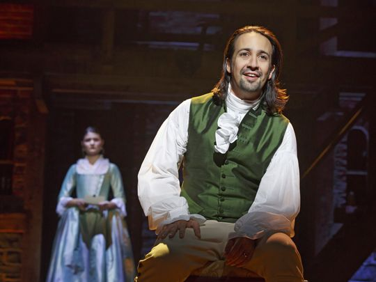

- Lin's favorite rapper is Eminem.
- He worked as an English teacher at Hunter College High School while writing In the Heights.
- He has three nephews and a niece.
- He and his wife have a dog named Tobillo, which means "ankle" in Spanish. They named her this because she was chewing on Vanessa's ankle when they found her.
- He blocked Madonna from going backstage when Hamilton was Off-Broadway because she was on her phone during the show.
- He is very vocal in his opposition to bootlegs.
- Lin wrote Spanish lyrics for Stephen Sondheim's West Side Story's 2009 revival.
- Lin has rappeed his acceptance speeches both at the Tony Awards and the Grammys.
- He lives fifteen blocks from his childhood home in Inwood.
- He has dubbed Jonathan Groff, the man who plays King George in Hamilton, "Groffsauce."